28 public and private hospitals across 16 Yangon townships. Search by name or township, or filter by hospital type.
Showing 28 facilities
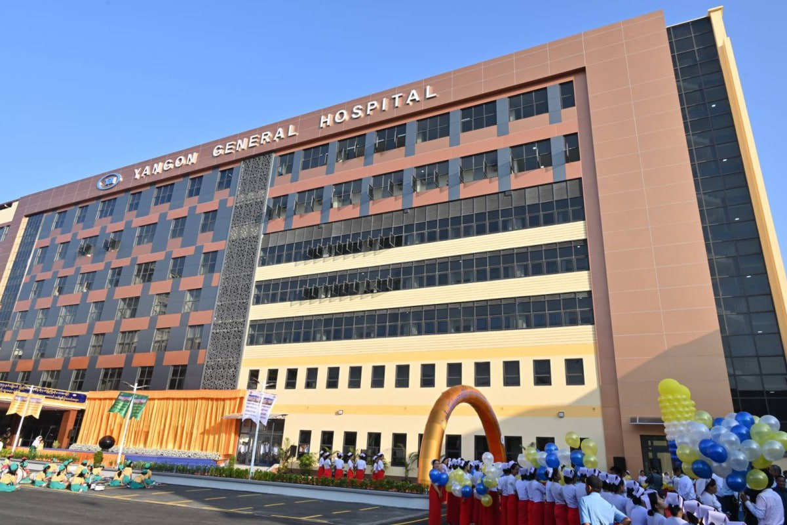
Bogyoke Aung San Road, Latha Township
Getting there: Take Downtown Bus lines 35, 51, or 65. Accessible via Bogyoke Aung San Rd near Lanmadaw junction.
Get Directions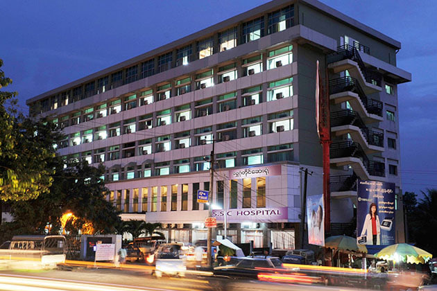
Shin Saw Pu Road, Bahan Township
Getting there: Located near Shwe Gon Daing junction. Easily reachable via Bahan taxi routes or Kaba Aye Pagoda road buses.
Get Directions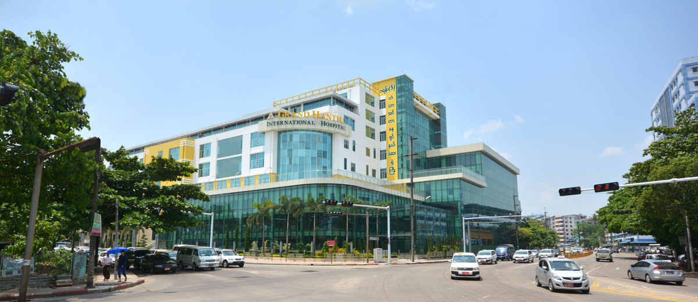
Lower Kyimyindaine Road, Ahlone Township
Getting there: Located on Lower Kyimyindaine Rd, Ahlone. Accessible via Strand Road or Pyay Road connecting routes.
Get Directions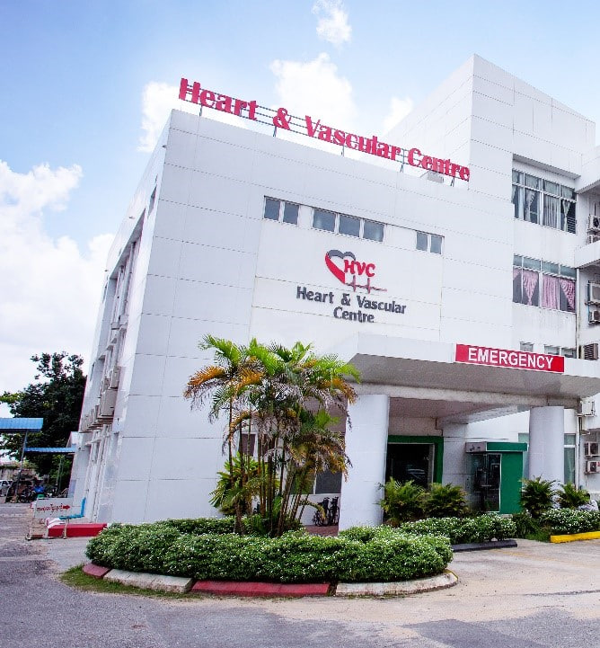
Khantharyar Road, North Okkalapa Township
Getting there: Located near University of Medicine 2. Accessible via Kaba Aye Pagoda Rd or Thanthumar Rd.
Get Directions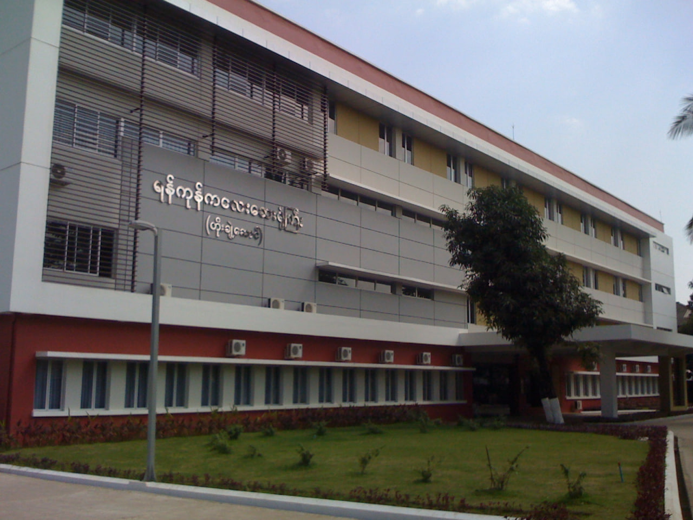
New Parami Road, Mayangone Township
Getting there: Located off New Parami Rd. Easy access via Pyay Rd or Kaba Aye Pagoda Rd.
Get Directions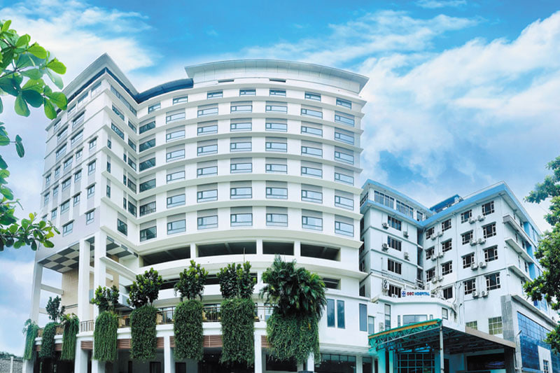
Pinlon Road, North Okkalapa Township
Getting there: Located along Pinlon Rd. Take YBS route 29 or 37 toward North Okkalapa.
Get Directions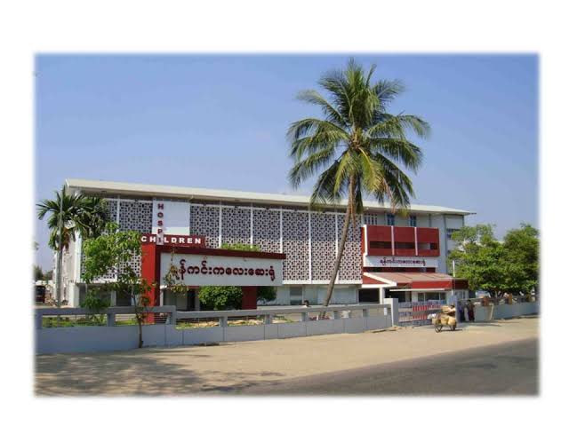
Kanbe Road, Yankin Township
Getting there: Situated on Kanbe Road near Yankin Center. Reached via Yankin Rd bus lines.
Get Directions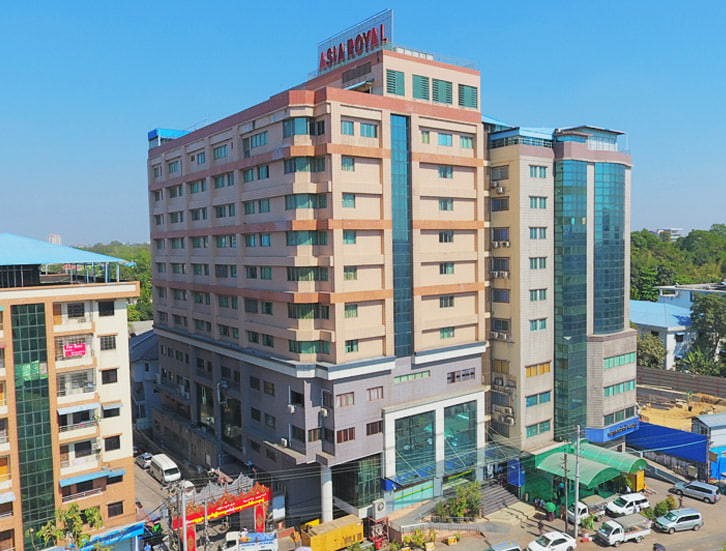
Baho Road, Kamayut Township
Getting there: Located on Baho Road near Hledan Junction. Accessible via Pyay Road or Baho Road.
Get Directions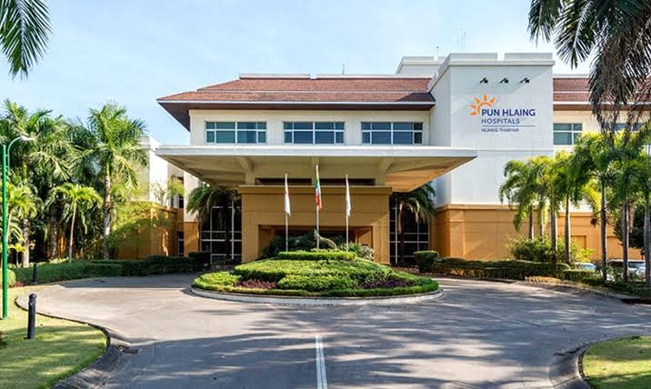
Pun Hlaing Golf Estate Avenue, Yangon
Getting there: Accessible via Bayint Naung Bridge or Hlaing River crossing road routes.
Get Directions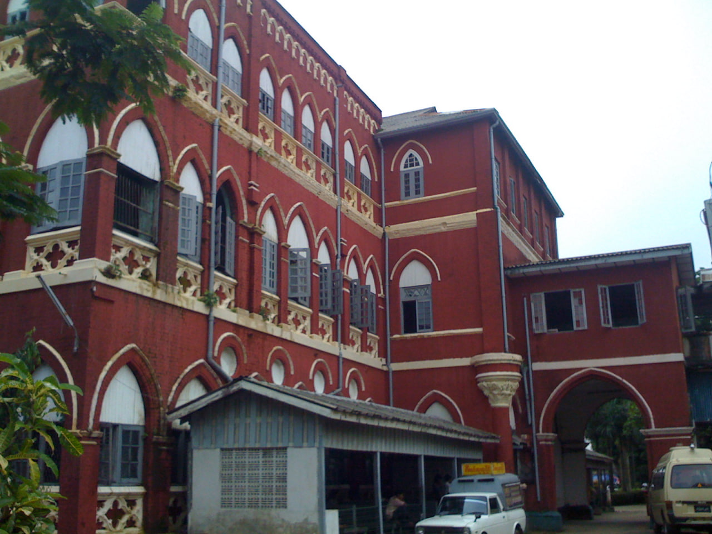
Lay Daung Kan Road, Thingangyun Township
Getting there: Located on Lay Daung Kan Rd near Sanpya Market. Easily reached via Thingangyun bus lines.
Get Directions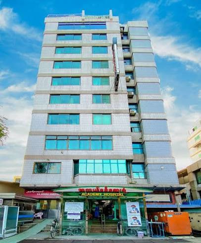
Saya San Road, Bahan Township
Getting there: Located along Saya San Road near Kokkine Swimming Club.
Get Directions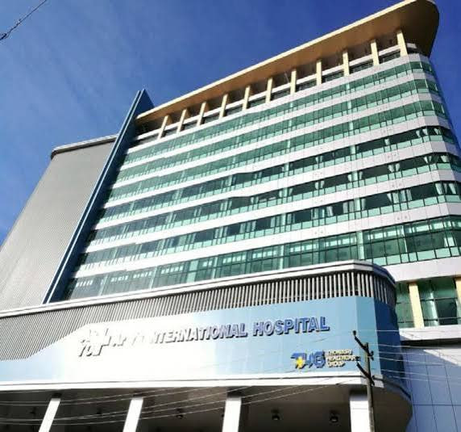
Min Kyaung Street, Lanmadaw Township
Getting there: Located in Lanmadaw near Pyay Road entrance. Convenient downtown taxi route.
Get Directions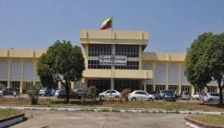
Min Gyi Road, Insein Township
Getting there: Located on Min Gyi Road near Insein Railway Station. Served by YBS bus lines 21, 37.
Get DirectionsShin Saw Pu Road, Sanchaung Township
Getting there: Located in Sanchaung near Pyay Road junction. Easy access from Dagon and Bahan.
Get Directions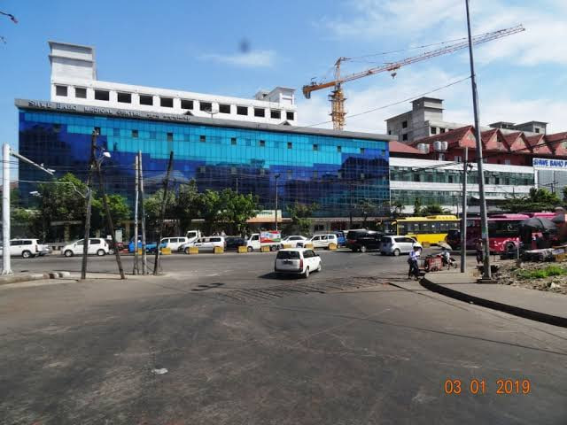
Pyay Road, Mingaladon Township
Getting there: Located along Pyay Road near Yangon International Airport in Mingaladon.
Get Directions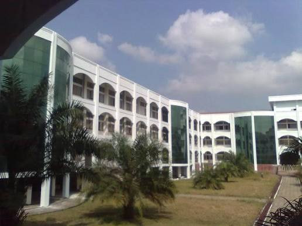
Pyay Road, Kamayut Township
Getting there: Situated along Pyay Road near Hledan Overpass in Kamayut.
Get Directions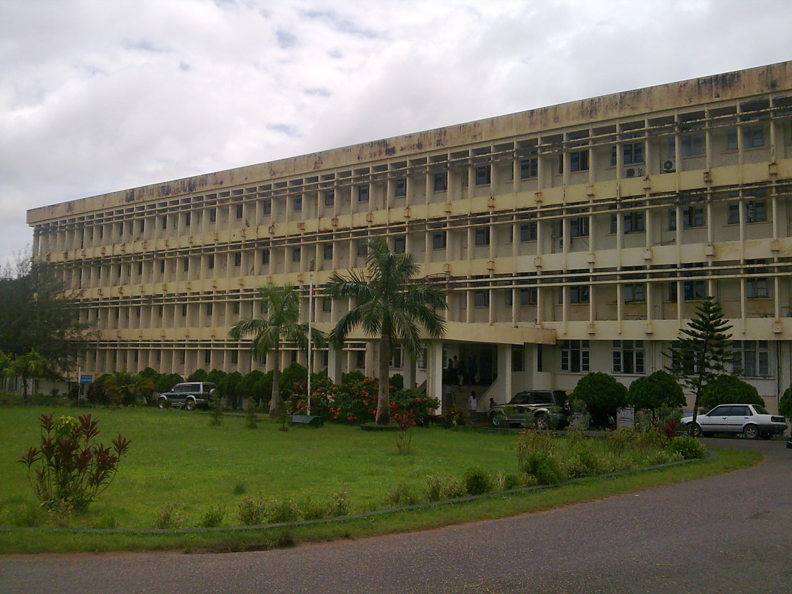
Pyay Road, Dagon Township
Getting there: Located on Pyay Road opposite Peoples Park in Dagon Township.
Get Directions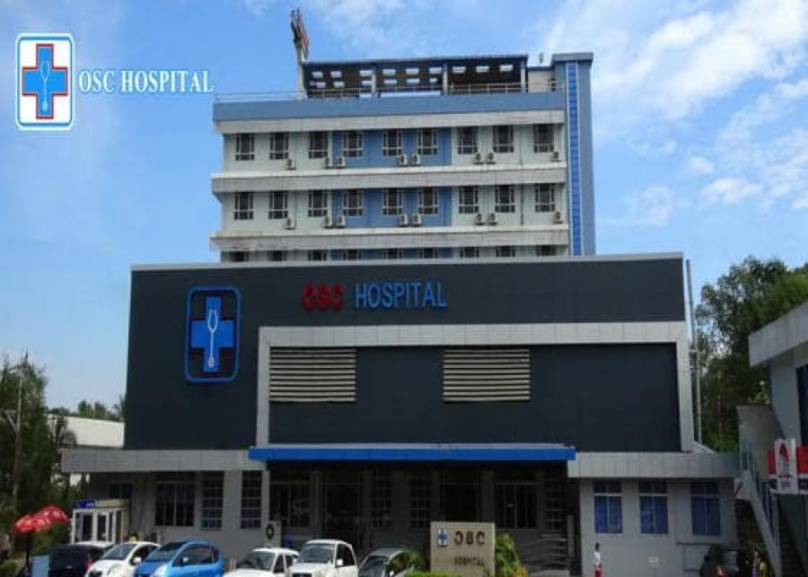
Pyay Road, Hlaing Township
Getting there: Situated on Pyay Road, Hlaing Township near MICT Park.
Get Directions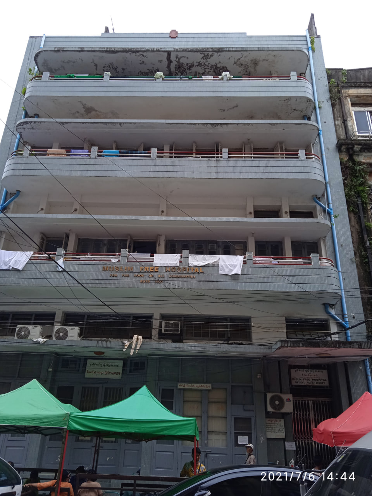
Waibargi Road, North Okkalapa Township
Getting there: Primary quarantine facility in Yangon. Reachable via Waibargi Road in North Okkalapa.
Get Directions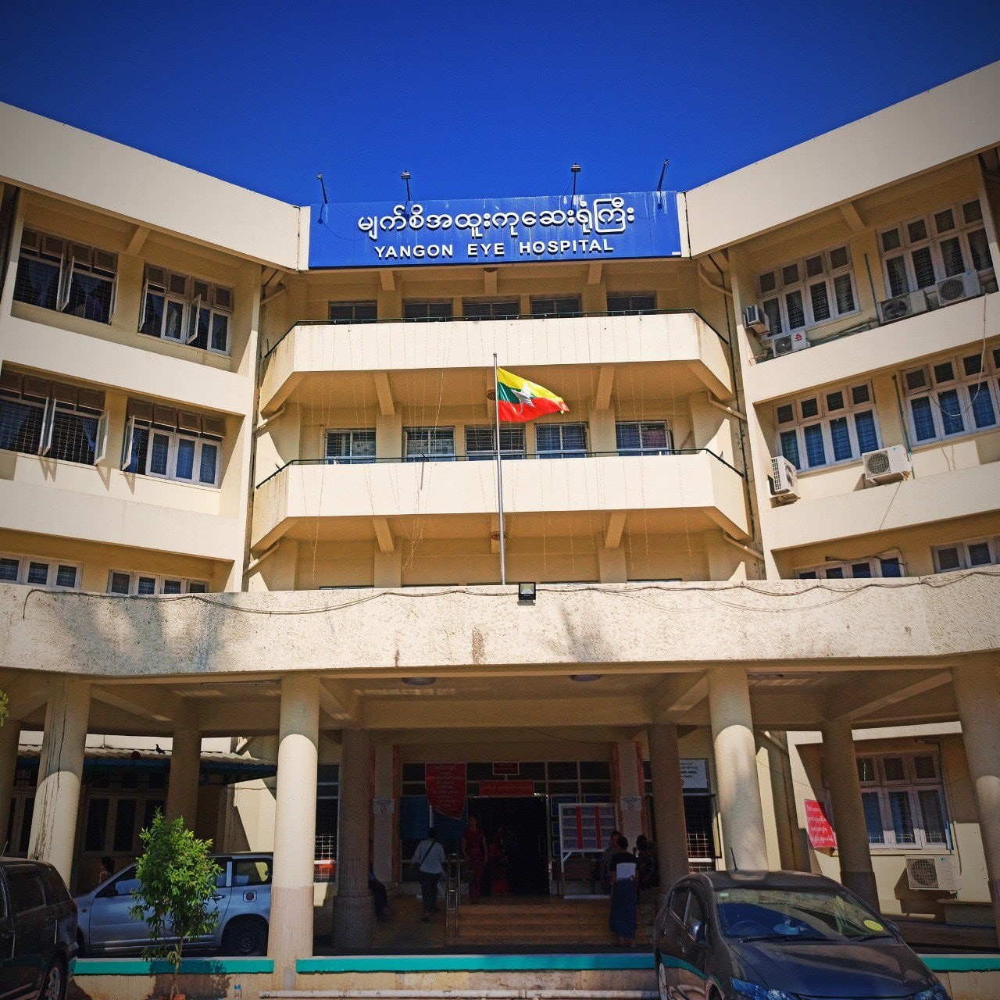
East Horse Race Course Road, Tamwe Township
Getting there: Located near Tamwe Ocean Supercenter junction.
Get Directions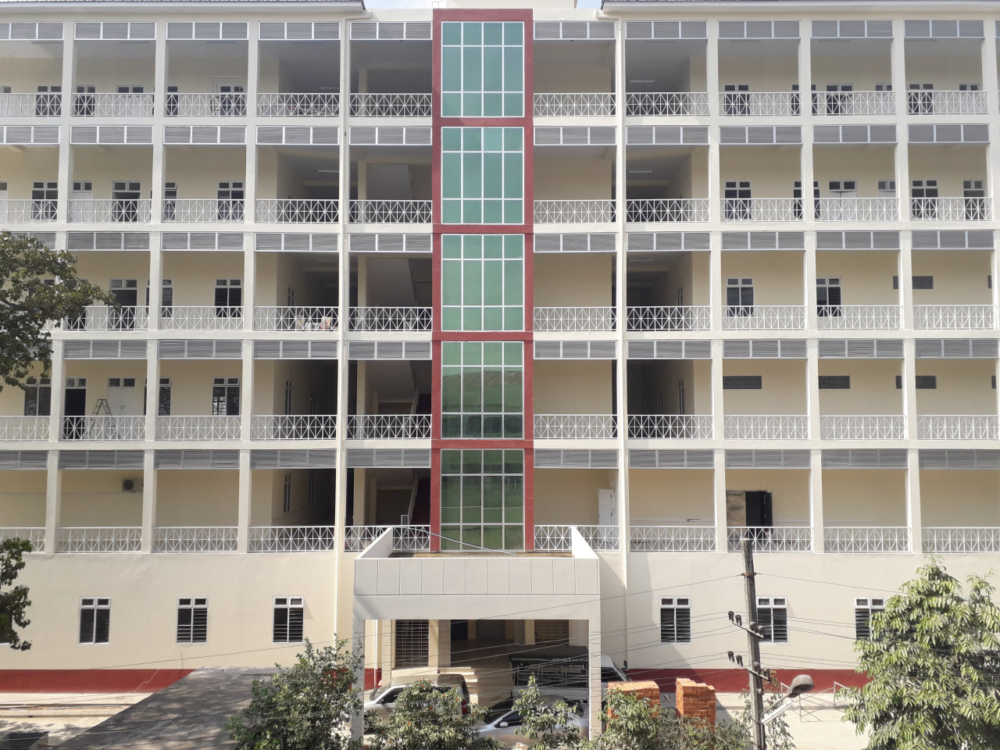
Alan Pya Pagoda Road, Latha Township
Getting there: Located near Yangon Railway Station downtown area.
Get Directions
Kyimyindaing Lower Road, Ahlone Township
Getting there: Situated along Kyimyindaing Lower Road in Ahlone.
Get DirectionsMaha Bandula Street, Kyauktada Township
Getting there: Located in Kyauktada downtown on Maha Bandula Street.
Get DirectionsBahosi Housing Complex, Lanmadaw Township
Getting there: Located inside Bahosi Housing Complex near Bogyoke Aung San Road.
Get DirectionsNatmauk Road, Dagon Township
Getting there: Situated on Natmauk Road near Kandawgyi Lake in Dagon.
Get DirectionsShwe Gon Daing Road, Bahan Township
Getting there: Located directly at Shwe Gon Daing junction in Bahan.
Get Directions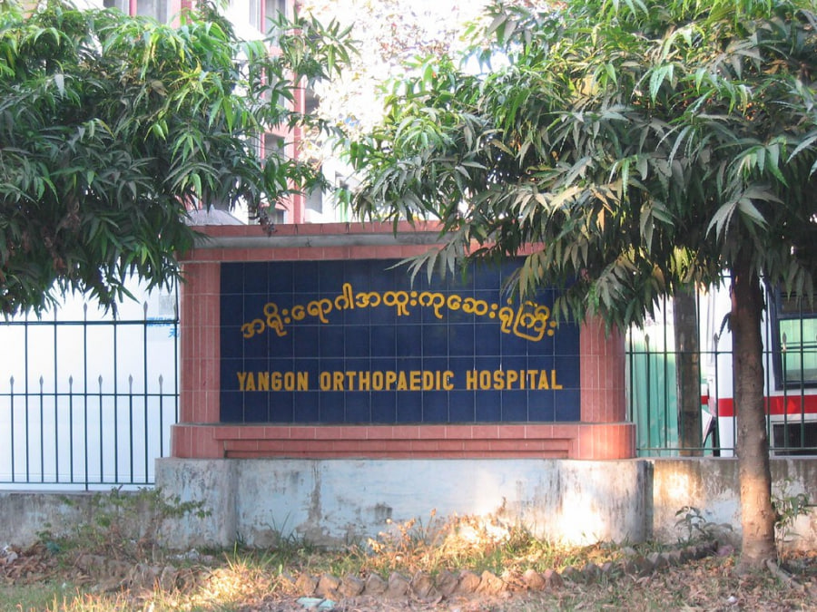
Hanthawaddy Road, Yangon
Getting there: Situated along Hanthawaddy Circle near Kyauktada/Kamayut border.
Get DirectionsYangon-Pyay Highway, Mingaladon Township
Getting there: Located along Yangon-Pyay Highway in Mingaladon Township.
Get DirectionsNo hospital matches your search. Try fewer words or choose “All” in the filters.
Please call the hospital before you travel to check opening hours and services. In an emergency, go to the nearest emergency department.